User Guide for DB2
Contents
User Guide for DB2#
Introduction#
Aurreum Data Protection Suite (ADPS) provides the capability for the backup and restore of DB2 databases. This guide introduces how to properly use ADPS to back up and restore DB2 databases.
Features#
Feature |
Description |
|---|---|
Backup type |
Full backup, incremental backup, cumulative incremental backup, automatic archiving log backup, log backup |
Backup source |
Database (single, multiple) |
Backup target |
Standard storage pool, de-duplication storage pool, local storage pool, tape library pool, object storage service pool, LAN-Free pool |
Reconnection time |
The job continues after the abnormal reset occurs in the network within the set time. The default value is 10 minutes. |
Backup compression |
Fast, none, tunable |
Backup schedule |
Immediate, one time, minutely, hourly, daily, weekly, monthly |
Restore type |
Timepoint restore, restore archived logs, recovery testing |
Restore location |
Original path, custom path |
Restore granularity |
Entire database |
Restore to different hosts |
Restoring to a different host requires the same OS and database versions. |
Disaster recovery |
Restore a single or multiple databases to the latest backup state simultaneously |
Storage pool replication |
Replicate backup sets from the source storage pool to another pool |
Restore from target pools |
Restore backup sets from the target storage pool |
Pre/Post action |
The pre action is executed after the job starts and before the resource is backed up or restored. The post action is executed after the resource is backed up or restored. |
Stop jobs |
Stop backup and restore jobs |
Speed limit |
Limit data transfer speed or disk read and write speed at different times |
D2C |
Back up data directly to the object storage |
D2T |
Back up data directly to the tape libraries |
LAN-Free |
Back up to and restore from LAN-Free storage pools |
Modify the backup source and target |
Modify the backup source and backup target of a job |
IPv6 |
Transfer and manage data over IPv6 network |
Access key login |
Login with Access Key is supported |
Install and Configure Agent#
Verify Compatibility#
Before deploying the agent, check whether your operating system (OS) and database version are supported. See the following information for mainly supported database and OS versions:
DB2 version: 8.1/9.1/9.5/9.7/10.1/10.5/11.1
OS version:
Windows 2003/2008/2008 R2/2012
Linux 6/7/8
AIX 6.1/7.1
Get Agent Packages#
Log in to ADPS console as the admin. Click Resource -> Install Agent icon and download the installation packages according to your needs.
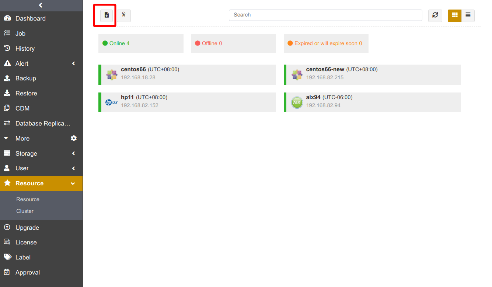
Install and Configure Agent on Linux OS#
Select Linux as the system and DB2 as the module. Copy an installation command.
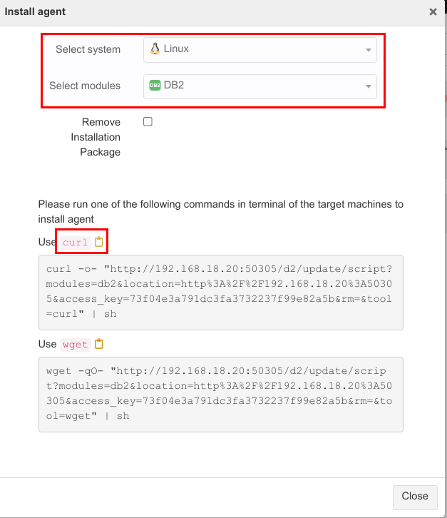
Paste and run the command in the terminal of the target host to execute the installation.
[root@kylinv10x86 ~]# curl -o- "http://192.168.18.57:50305/d2/update/script?modules=file&location=http%3A%2F%2F192.168.18.57%3A50305&access_key=b448e47a5e5ae07c5a4a77bf97c383f5&rm=&tool=curl" | sh
% Total % Received % Xferd Average Speed Time Time Time Current
Dload Upload Total Spent Left Speed
100 7912 0 7912 0 0 3863k 0 --:--:-- --:--:-- --:--:-- 3863k
% Total % Received % Xferd Average Speed Time Time Time Current
Dload Upload Total Spent Left Speed
0 0 0 0 0 0 0 0 --:--:-- --:--:-- --:--:-- 0
100 57.2M 100 57.2M 0 0 22.1M 0 0:00:02 0:00:02 --:--:-- 24.8M
% Total % Received % Xferd Average Speed Time Time Time Current
Dload Upload Total Spent Left Speed
0 0 0 0 0 0 0 0 --:--:-- --:--:-- --:--:-- 0
100 6175k 100 6175k 0 0 97.2M 0 --:--:-- --:--:-- --:--:-- 97.2M
% Total % Received % Xferd Average Speed Time Time Time Current
Dload Upload Total Spent Left Speed
0 0 0 0 0 0 0 0 --:--:-- --:--:-- --:--:-- 0
100 814k 100 814k 0 0 9465k 0 --:--:-- --:--:-- --:--:-- 9465k
warning: adps-common-3.0.35274-1.b6392da.dbg.x86_64.rpm: Header V3 RSA/SHA1 Signature, key ID 378aae6a: NOKEY
Verifying... ################################# [100%]
Preparing... ################################# [100%]
package adps-common-3.0.35274-1.1eebb99.dbg.x86_64 is already installed
warning: adps-agent-3.0.35274-1.b6392da.dbg.x86_64.rpm: Header V3 RSA/SHA1 Signature, key ID 378aae6a: NOKEY
Verifying... ################################# [100%]
Preparing... ################################# [100%]
package adps-agent-3.0.35274-1.1eebb99.dbg.x86_64 is already installed
warning: adps-agent-file-3.0.35274-1.b6392da.dbg.x86_64.rpm: Header V3 RSA/SHA1 Signature, key ID 378aae6a: NOKEY
Verifying... ################################# [100%]
Preparing... ################################# [100%]
package adps-agent-file-3.0.35274-1.1eebb99.dbg.x86_64 is already installed
Restarting adps-agent (via systemctl): [ OK ]
[root@kylinv10x86 ~]#
Install and Configure Agent on Windows OS#
Download Windows Installation Package#
In the Install agent window, select Windows and click Download Windows agent to download the package.
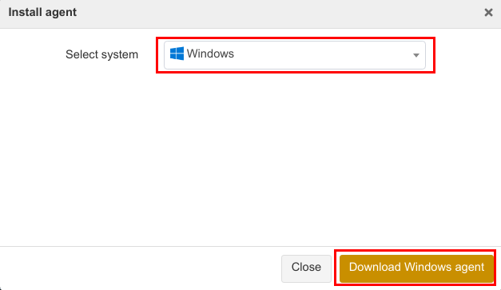
Install Agent on Windows#
Upload the installation package to the agent.
Double-click the package to launch the setup wizard and click Next.
This installation package is a collection of components. It checks the database resources, files, or applications installed on the agent by default. Select the DB2 component and click Next.
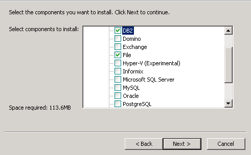
Set the Backup Server Host, Backup Server Port, and Access Key. Click Next.
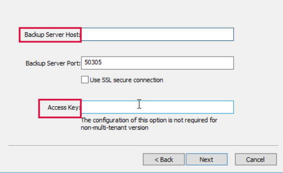
Select Destination Folder and click Next to install the software. Wait for the installation to complete.
Check Successful Installation#
After the successful installation, log in to ADPS console as the admin and go to the Resource page. The host with the agent installed will be available on the Resource list.
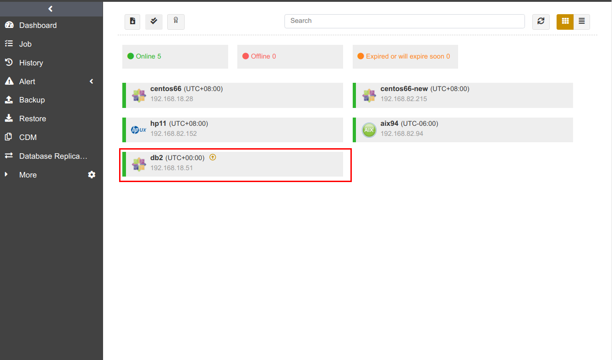
Before You Begin#
Check Database State#
Check the DB2 service state of the agent. The DB2 database service should be in the “Active – Up” state for backup and restore.
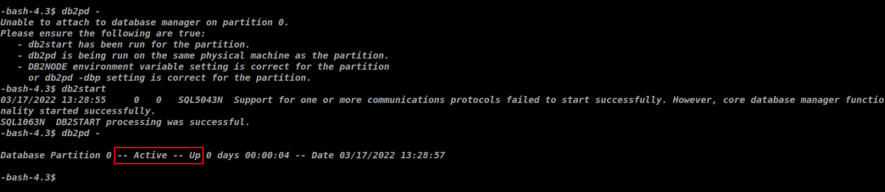
Check Resource#
Log in to ADPS console as the operator and go to Resource. You can see the activated and authorized resource with an “Online” state on the list. Please check Activate License and Assign Authorization if the resource is unavailable.
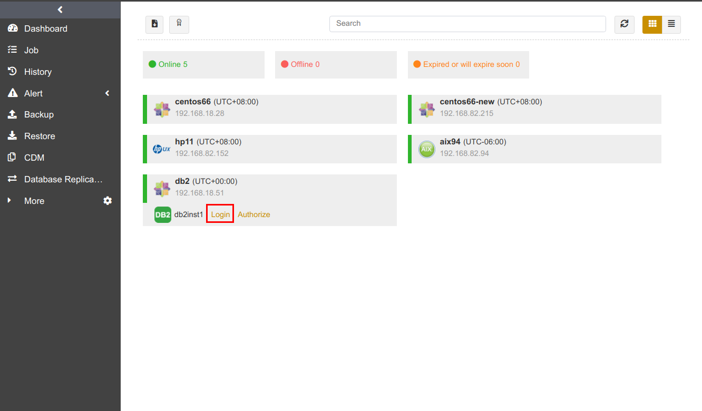
Check Storage Pool#
Log in to ADPS console as the operator, go to Storage Pool, and verify the presence of storage pools. If no storage pool is available, please contact the admin to create one and assign permissions to the operator.
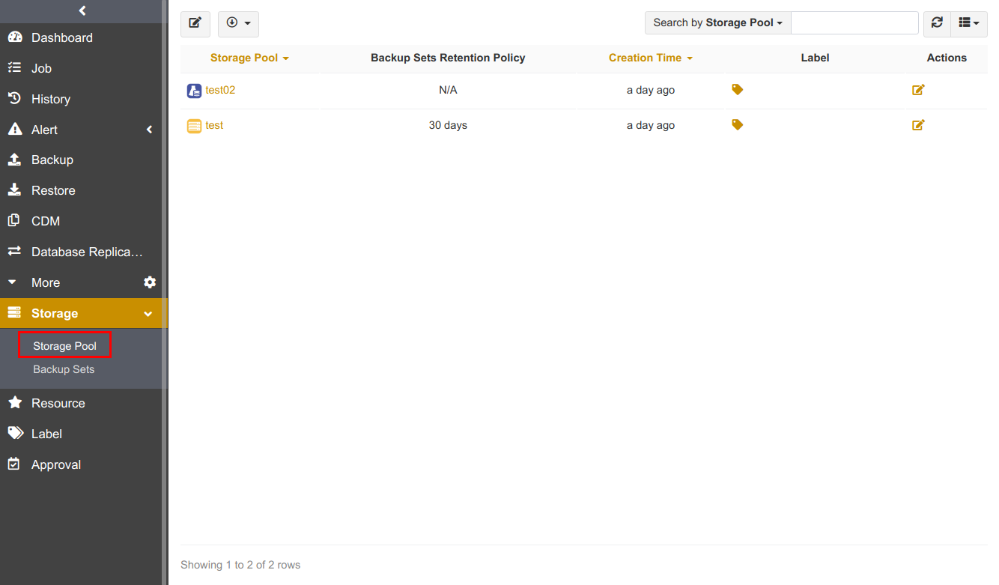
First Time Login#
Before creating the first DB2 backup and restore, go to Resource and click Login next to the resource to log in to DB2.
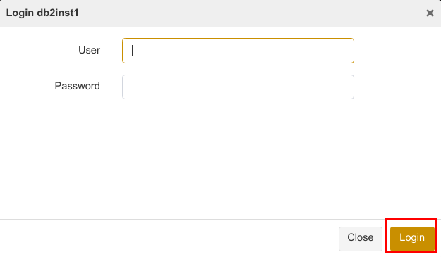
You can use OS Authentication or Access Key to log in to your DB2 database.
OS Authentication: For OS account login requirements, see Limitation.
Access Key: Log in with Access Key tied to the user who has been authorized the resource. Data security risks exist when back and restore jobs are carried out without the database password.
Select Authentication. Enter User and Password. Click Login.
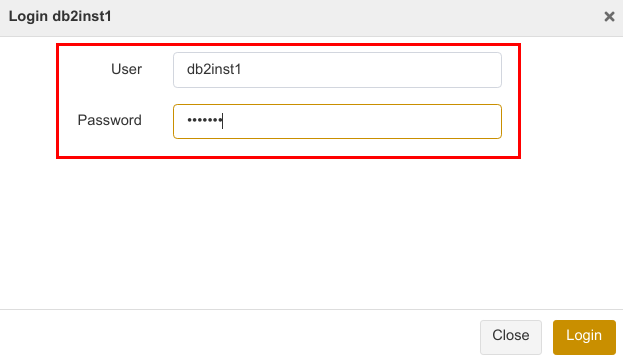
Note:
To use the Access Key authentication, it is required that the admin enable the Access Key Login Instance option in Settings -> Security.
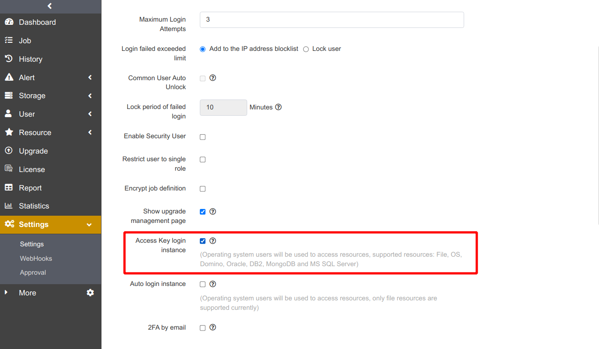
Create Backup Jobs#
This chapter introduces how to back up DB2 databases.
Prerequisites#
The agent has been installed. For installation, see Install and Configure Agent.
The license has been activated, and the resource has been authorized to users. For details, see Activate License and Authorize User.
Log in to the ADPS console as the operator with resource permissions.
Create Full Backup Jobs#
(1) Click Backup. Select the DB2 host and instance.
(2) Select Full as the backup type and choose the databases to be backed up.
Note:
To back up multiple databases simultaneously, select databases with the same code page setting.
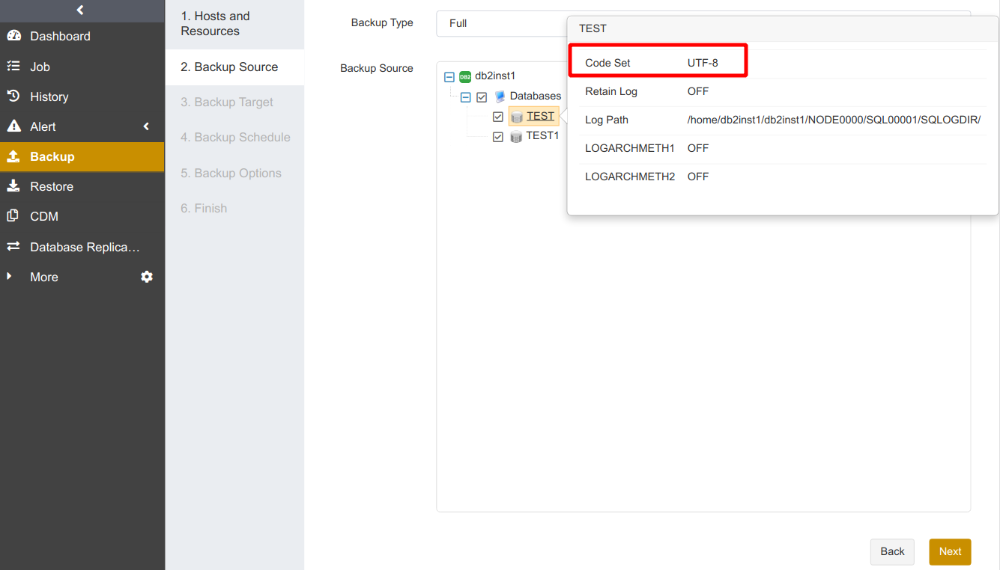
(3) Select Backup Target. You can choose a standard storage pool, de-duplication storage pool, tape library pool, object storage service pool, and LAN-Free pool.
Note:
It is not supported to store full backups, incremental backups/cumulative incremental backups, and log backups in different storage pools.
(4) Go to Backup Schedule to set the execution time of the backup job. For details, see Backup Schedule Operation. It is generally recommended to run a full backup on a weekly basis.
(5) Set Backup Options, including common and advanced options.
Common options:
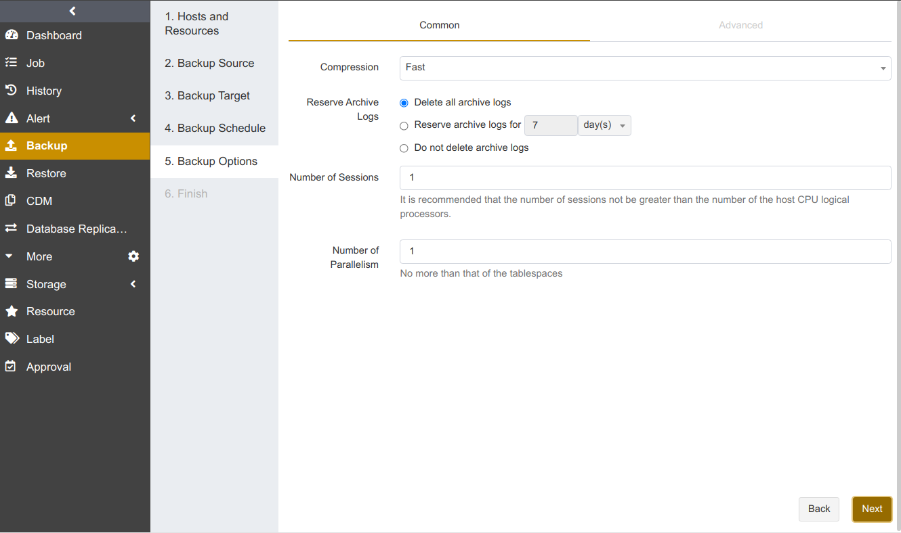
Compression: Fast is enabled by default.
None: No data compression during the backup.
Tunable: You can customize the compression level, which requires the activated feature of Advanced Compression.
Fast: Use the fast compression algorithms during the backup.
Reserve Archive Logs: Set the retention policy for archive logs. You can choose to delete, retain all archive logs, or choose how long to retain archive logs before the automatic deletion.
Number of Parallelism: Define the number of tablespaces to be read in parallel, and assign each process or thread to the tablespace. It is recommended that the number of parallelism is not greater than the number of tablespaces in the database.
Number of Sessions: Specify the number of parallel data streams used to write data. It is recommended that the number of sessions is not greater than the number of the host logical CPU.
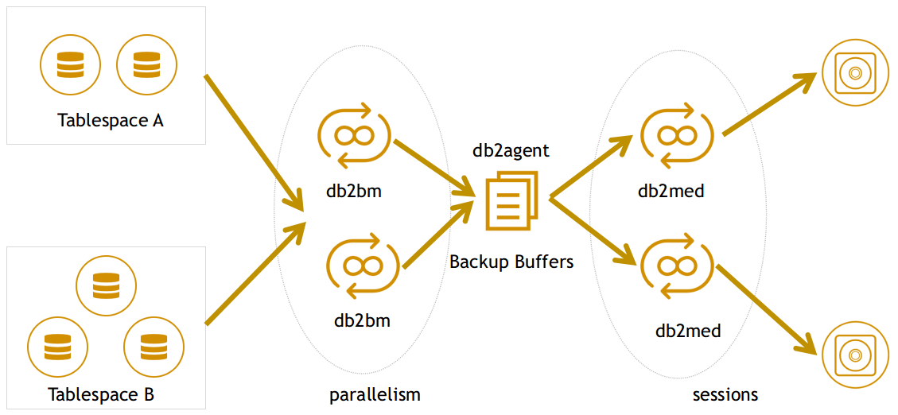
Advanced options:
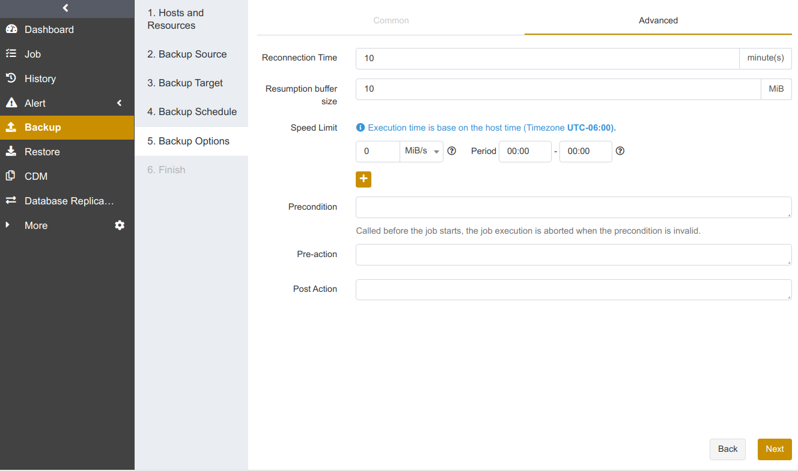
Reconnection Time: Support 1 to 60. The unit is minute(s). The job continues after the abnormal reset occurs in the network within the set time.
Speed Limit: Set the limit for data transfer speed or disk read and write speed. The unit is MiB/s. Click the “+” icon to add limits at different times.
Precondition: The precondition is checked before the job starts. The job execution is aborted when the precondition is invalid.
Pre/Post Action: The pre action is executed after the job starts and before the resource is backed up or restored. The post action is executed after the resource is backed up or restored.
(6) Set the Job Name and confirm the job information. Click Submit.
Create Incremental Backup / Cumulative Incremental Backup Jobs#
It is generally recommended to create full backups regularly (such as weekly) or create incremental backups / cumulative incremental backups at short intervals (such as daily) so that you have at least one recoverable point in time every day.
Creating an incremental backup or a cumulative incremental backup is the same as creating a full backup. Select Incremental Backup / Cumulative Incremental Backup as the backup type and choose databases.
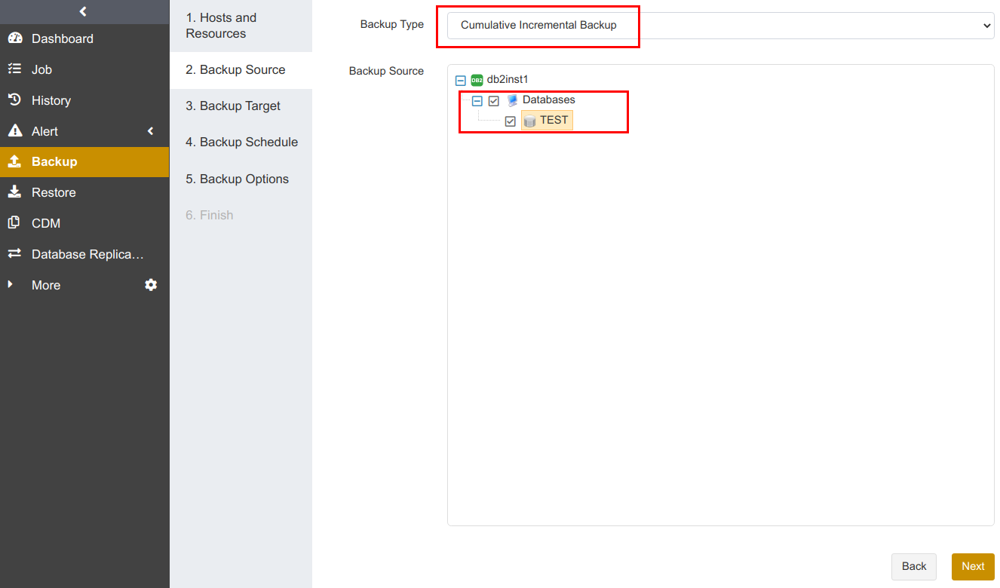
Note:
If the database has never been fully backed up, or has not been fully backed up after the restore, the first incremental backup / cumulative incremental backup will be performed as a full backup by default.
Create Log Backup Jobs#
Based on periodic full and incremental backups, you can also add frequent log backups to back up only the binary logs of the database. The appropriate log backup frequency depends on the balance between your tolerance for the risk of work loss and the number of log backups you can store, manage, and potentially restore. Performing a log backup every 15 to 30 minutes may be sufficient. But if your business requires minimizing the risk of work loss, consider running more frequent log backups. More frequent log backups also increase the frequency of log truncation, making log files smaller.
Creating a log backup is similar to creating a full backup. Select Log as the backup type and choose databases.
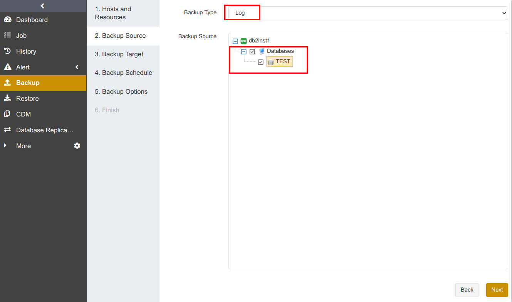
Create Automatic Archiving Log Backup Jobs#
When you create an automatic archiving log backup job, the job will be in an idle state. The job will be executed when the logical logs get full or when you manually execute the log switch command.
You can only create one automatic archiving log backup job on one database instance. Delete the old automatic archiving log backup job first before creating a new automatic archiving log backup job.
Creating an automatic archiving log backup job is the same as creating a full backup job. Select On Demand as the backup type.
Note:
Prerequisites for an automatic archiving log backup job:
You have executed a full backup job and the full backup set exists;
You have selected to archive to disk for the database. For example: LOGARCHMETH1 = DISK:/home/db2inst1/arch
Differences between log backup and automatic archiving log backup:
The database server triggers an automatic archiving log backup when the logical logs are full or when you manually execute the log switch command. To avoid the constant log archiving failures and database hang issues due to the inaccessible storage server, it is recommended that FAILARCHPATH should also be configured for the database when you create the automatic archiving log backup.
A log backup is initiated and executed by ADPS, and is generally set to execute periodically.
Log backups and automatic archiving log backups do not back up database schema. If a new table is created and only log backups are performed later instead of the database-level backups (full backups, incremental backups, and cumulative incremental backups), the new table data cannot be restored. Therefore, it is not suggested that only one database-level backup be performed followed by log backups/automatic archiving log backups. For backup strategy details, see Backup Protection Strategy.
Create Restore Jobs#
This chapter introduces how to restore DB2 databases. ADPS provides a variety of restore types for different needs, including timepoint restore, restore archived logs, and recovery testing.
Prerequisites#
A backup job has been completed successfully. See Create Backup Jobs.
To restore to another host, install the agent on that host, activate its license, and assign the resource to users.
Create Timepoint Restore Jobs#
When a logical error or a disaster occurs in a DB2 database, timepoint restore allows you to restore the database to a specified point-in-time state.
(1) Select the DB2 Host and Instance. Click Next.
(2) Select Timepoint Restore as the restore type, and select the Database. You can select a backup set by clicking the time displayed next to the Restore to Point-in-time option, and specify a point in time by dragging the slider control. Click Next.
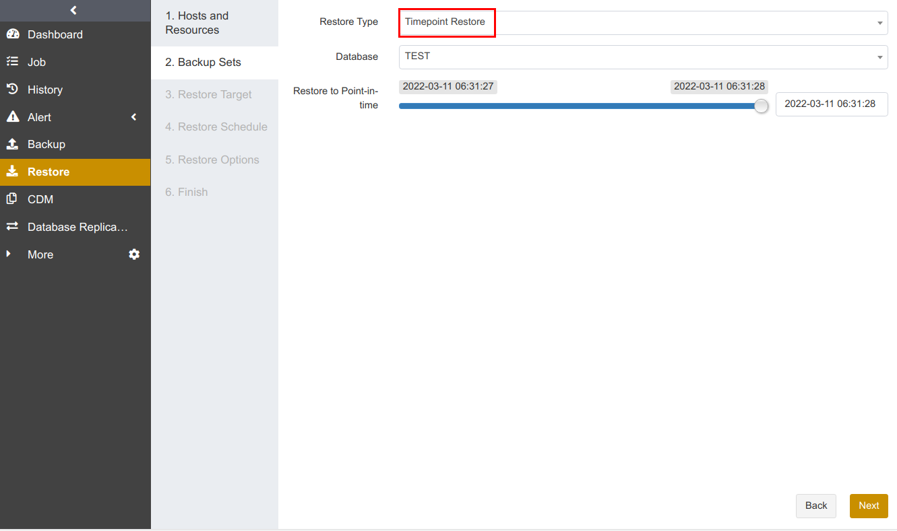
(3) Set Restore Target. The restore target can be the source host or a different host. Click Next.
Source host: The Restore Target page selects the source host by default.
Different host: On the Restore Target page, you can select a different host. Restoring to a different host requires the same OS version and the same DB2 version.
(4) Set Restore Schedule. Only immediate and one-time schedule types are supported.
(5) Set Restore Options. You can set restore database, number of sessions, without Rolling forward in common options, and reconnection time, resumption buffer size, speed limit, precondition, pre/post action and serial restore in advanced options.
Restore database: You can overwrite the source database or create a new database. To overwrite the source database, leave the field blank; to restore to a new database, the following options will appear automatically when you fill out the field.
Database location: Set the location where the database manager stores database control files.
Log location: Set the location of the database active log files.
Non-automatic storage containers location: Set the location of the non-automatic storage containers. The option is displayed only when non-automatic storage tablespace containers exist in the database to be restored. It is required to modify all non-automatic storage container paths.
Automatic storage containers location: By checking Enable, set the database storage location where the database manager stores the automatic storage tablespace containers. When the container is a raw device, and no same raw device is available on the restore host, ADPS will automatically redirect and restore to DMS. You can create multiple storage containers locations by clicking the “+” icon.
Number of Sessions: Specify the number of parallel data streams used to write data. It is recommended that the number of sessions is not greater than that of host logical CPU.
Without Rolling forward: When you enable the option, the database will keep “Pending” after the timepoint restore job is executed successfully.
(6) Confirm the job information and submit the job.
Create Restore Archived Logs Jobs#
This restore type is applicable when you enable ARCHIVELOG. You can restore archived logs in the specified range to the database archive log directory of the source host or the different host.
(1) Select the DB2 host and instance. Click Next.
(2) Select Restore Archived Logs as the restore type. Select the Database and Restore Branch.
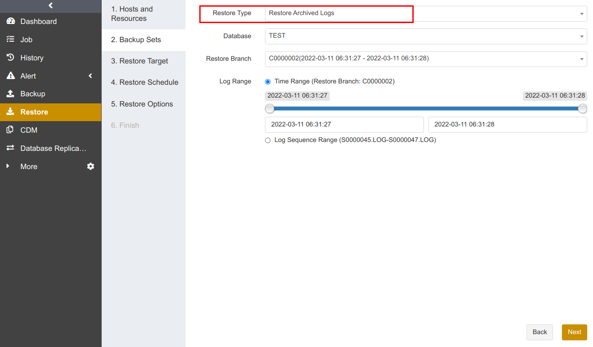
Log ranges: When you select Time Range, drag the slider control to specify a time range; when you select Log Sequence Range, select the range to start and end.
(3) Set Restore Target. Select the source host or a different host as the restore target. Click Next.
(4) Set Restore Schedule. Only immediate and one-time schedule types are supported. Click Next.
(5) Set Restore Options. It is required to set Archived Logs Destination in the common options. Click Next.
(6) Set Job Name and confirm the job information. Click Submit.
Create Recovery Testing Jobs#
Recovery testing verifies the integrity and availability of the backup set. With the hourly, daily, weekly, or monthly schedule, you can use recovery testing to restore the latest DB2 backup set to another instance on the source host or a different host.
(1) Select the DB2 host and instance. Click Next.
(2) Select Recovery Testing and select the databases. You can specify the database name by clicking the Rename icon next to the selected database.
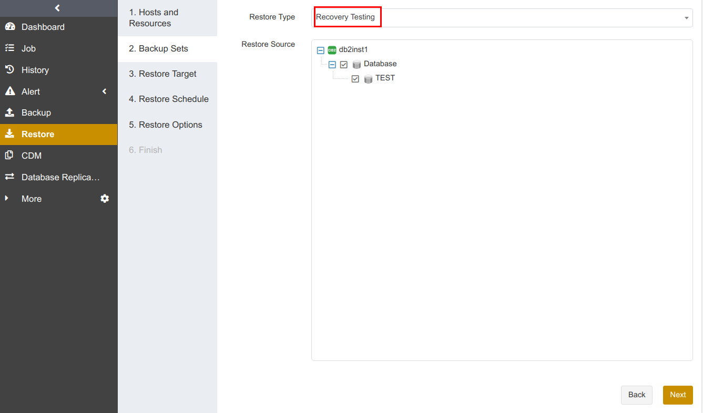
(3) Set Restore Target. Select the source host or a different host as the restore target. Click Next.
(4) Set Restore Schedule. You can set an hourly, daily, weekly, or monthly schedule. Click Next.
(5) Set Restore Options. Click Next.
(6) Confirm the job information. Click Submit.
(7) Wait for the job cycle to be executed. The job will restore the latest backup sets of the source host.
Manage Jobs#
The Job page provides the job information of all agents. You can start, modify, and delete the jobs.

Start: Click
 to start the job immediately.
to start the job immediately.Modify: Click to modify the basic job information, backup / restore schedule and options.
Delete: Click
 to access the confirmation window. Click OK to delete the job.
to access the confirmation window. Click OK to delete the job.
Backup Protection Strategy#
Backup Schedule Operation#
ADPS provides six types of backup schedules. The schedule type selected is only valid for the currently created job.
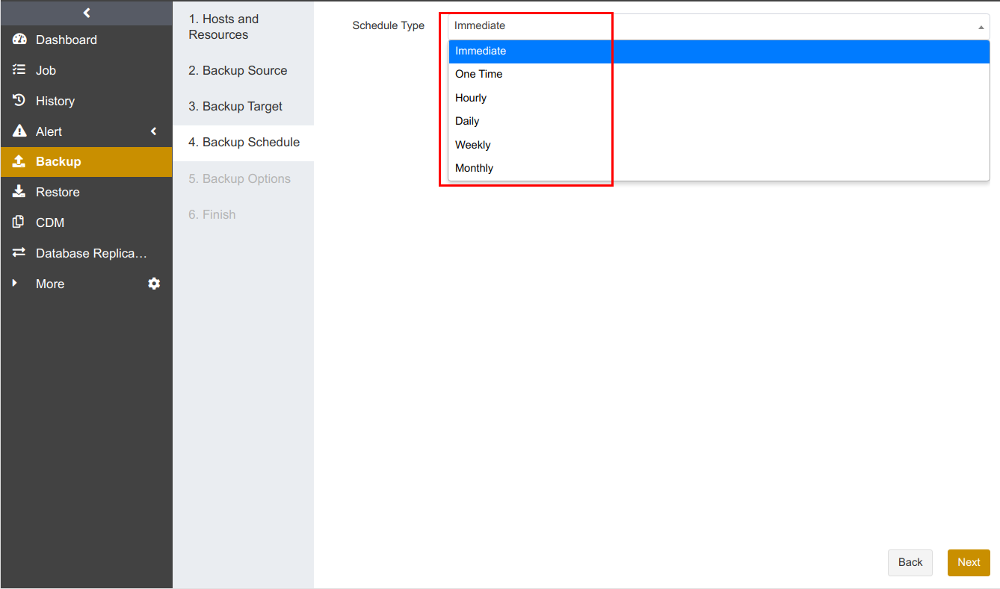
Immediate: The job starts immediately after it is submitted.
One Time: The job starts to run at a specific time. After the job is submitted, the job will be in an idle state and start to run when the specific run time is reached.
Hourly: The job runs every few hours according to the setting. The value range is an integer between 1 and 24.
Daily: The job runs every few days according to the setting. The value range is an integer between 1 and 5.
Weekly: The job runs every few weeks according to the setting. You can also set the number of weeks and specify which day of the week to run the job.
Monthly: The job runs every few months according to the setting. You can also set the week/day and specify which week/day of the month to run the job.
Example: Run the job every two weeks on Friday at 18:00
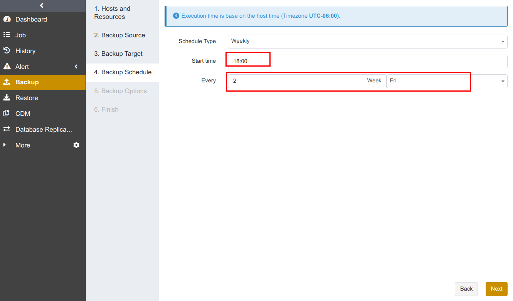
The actual execution time will be:
If the current time is Friday at 17:00, the execution time will be Friday at 18:00 (the current day).
If the current time is Thursday at 17:00, the execution time will be Friday at 18:00 (the next day).
If the current time is Saturday at 17:00, the execution time will be next Friday at 18:00.
After the first run is completed, the job will start automatically at 18:00 on Friday every two weeks.
Backup Strategy Advice#
There are five types to back up DB2: full backup, incremental backup, cumulative incremental backup, log backup, and automatic archiving log backup. Full backup, incremental backup/cumulative incremental backup, and log backup/automatic archiving log backup can be used together. It is recommended to formulate the following backup strategy according to different situations such as network bandwidth, business data volume, security requirements, and the amount of lost data that you can tolerate.
When the application traffic is relatively small, run a Full Backup once a week to ensure that you have at least one recoverable RTO every week.
After that, you can run an Incremental Backup every day to reduce the backup time and ensure that you have at least one recoverable RPO every day.
If the database supports log backup, you can run a Log Backup every few hours to ensure that the restore granularity RPO can reach the second level.
Note:
Avoid using the following strategies:
Perform only full backups.
Perform a full backup followed by all incremental or log backups.
Parallelism/Sessions Number Configuration#
Parallelism/Sessions number for backup jobs
DB2 supports up to 255 sessions. You can set the number of parallelism and sessions for backup jobs according to the actual environment. A reasonable number can improve job performance. It is recommended that the number of sessions is not greater than that of host logical CPU, and the number of parallelism is not greater than that of tablespaces.
Parallelism/Sessions number for restore jobs
The restore job does not provide the setting for the parallelism number. It is recommended that the sessions number is not greater than the number of host logical CPU.
Limitation#
Function |
Limitation |
|---|---|
Backup |
To log in to the DB2 database via the OS authentication method, Linux requires the DB2 instance user account whereas Windows requires a Windows administrator account. If you want to log in to the database using the domain user on Windows, fill in the domain name to successfully log in to the database resource and back up the databases. |
Glossary#
---
class: longtable
---
| Term | Description |
| ---------------- | ------------------------------------------------------------ |
| Fast Compression | Compress data during backup using fast compression algorithms. |
| Log truncation | Log truncation can remove inactive virtual log files from the logical transaction logs in a DB2 database to free up space in the logical logs for reuse by the physical transaction logs. |